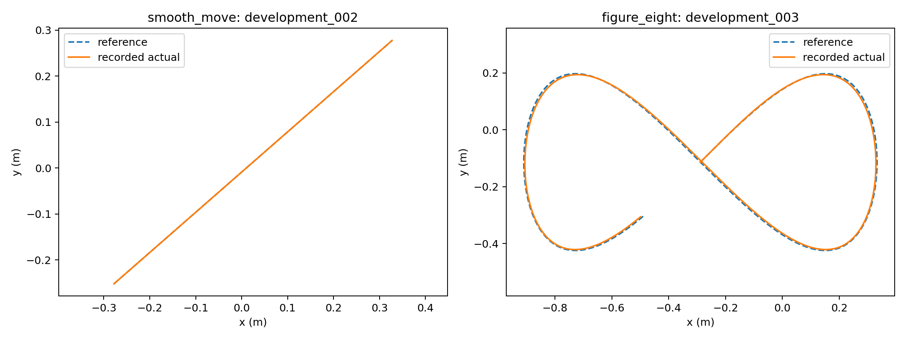
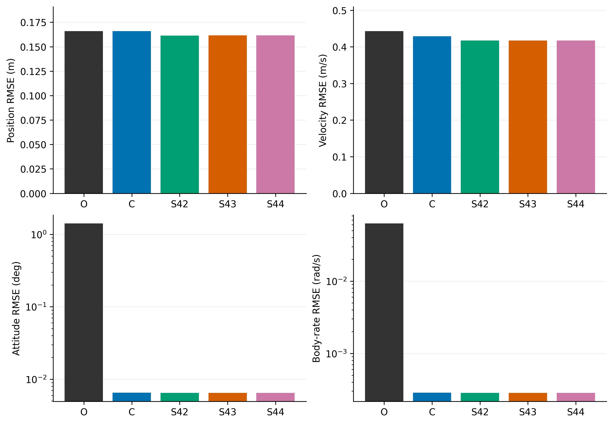

MSC DISSERTATION · ONGOING
Hybrid neural models for UAV dynamics
Combining physical quadrotor dynamics and learned residual corrections for command-driven state prediction.

Research focus
Supervisor: Professor James Lam · The University of Hong Kong
I develop Python, PyTorch and RotorPy pipelines to study whether learned residuals can improve a physics-based UAV model. An exploratory comparison covered six neural-model variants, followed by a refined study with separate training, development and held-out scenarios.
Findings
Across 32 held-out simulation scenarios and three training seeds, mean one-second position RMSE decreased from 0.1659 m to 0.1615 m: a 2.65% improvement over the original physics baseline.
Closed-loop tracking outcomes were mixed. My analysis examines mass, inertia and wind variations, tracking errors and command variation to distinguish improved prediction from improved control.
My contribution
Simulation and model evaluation pipelines, model comparisons, reproducible experiment organisation, and prediction and tracking analysis.
SIMULATION SCENARIOS
Different paths, a shared modelling question.
These two development examples show a smooth movement and a figure-eight trajectory. The reference path is compared with the recorded simulated flight, illustrating the motion used to study the models.

PREDICTION RESULTS
Comparing the models on unseen scenarios.
The completed evaluation compared the frozen models across 32 held-out simulation scenarios. The charts show errors in position, velocity, orientation and rotation rate over one-second prediction windows. Lower values indicate more accurate predictions.

The hybrid models reduced mean one-second position RMSE by 2.65% relative to the original physics baseline. The corrected physics model already accounts for much of the improvement in rotational prediction, so that gain should not be attributed entirely to learning. These prediction results are separate from the mixed closed-loop tracking outcomes.